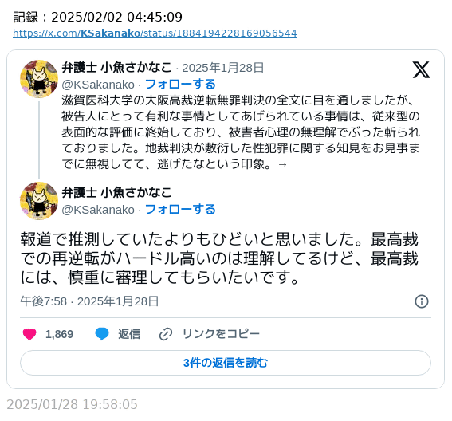

追記∶性被害の訴え時に発生しやすい誤謬例その他
前件肯定式（正常）と後件肯定式（誤謬）
前件肯定式（正常）
前提：性被害者ならば従順・懐柔反応をとる
前提：
私は性被害者である
結論：私の振る舞いは従順・懐柔反応である
P 甘い粉物
M 砂糖
s
定言変換
①砂糖Mは甘い粉物Pである。
②私sは砂糖Mを手にとった。
③結論、手にとった粉物は甘かった。
s∈M⊂P ゆえに s∈P
これなら主張の流れになんの矛盾もない。
後件肯定式（誤謬）
前提：性被害者ならば従順・懐柔反応をとる
前提：私の振る舞いは従順・懐柔反応である
結論：
私は性被害者である
★記号定義 大名辞P（大概念） 小名辞S（小概念） 中名辞M（媒概念）
P 甘い粉物
M 砂糖
①s
②s
こちらはどうか → 定言変換
①砂糖mは甘い粉物pである。
②私sが手にとった粉物pは甘かった。
③結論、私sの掌にある粉物は
砂糖mである。
中名辞不周延で端的に間違い。
また定言三段論法で中名辞が結論部に
残ることはない。
①砂糖である可能性もある
②砂糖でない可能性もある
この場合、②の可能性を排除できない限り「ある」ものとして扱えない
わけです。これを法律関係者が刑事司法の場面で無罪推定と表現して
るだけで、そもそも法原則などという高尚な話でも何でもなく、推論
を正しく実行できるかどうか、それだけのこと。
使用される場面
被疑者サイド
事中事後の対応は親密であり不同意を訴える内容と評価できない。
被害申告サイド
それは被害者に共通する心理傾向（従順・懐柔反応）である。
ゆえに性被害があったと推定できる。
たとえばこういうやつ。

https://x.com/KSakanako/status/1884194223131656589
より引用
論理の逆走（後件肯定）の解説
投稿者は被害者心理というけれど、ご指摘にある統計上の傾向が
あったとしても、そうした統計事実を個別事件へ演繹可能かは別問題。
上の論理分岐に当てはめると、裁判は大前提（性被害者ならば
特徴Aがある）の前件を認定可能かを審理する場でしょう。そこを
スキップして、被害者に見られる統計的傾向から
sはpゆえにmを導いたらだめ。
この分岐は
論理の逆走
（後件肯定または中名辞不周延）で
論点先取構造を持ち論理強度も弱い。
性被害者である（前件）
特徴Aがある（後件）
前件肯定：正しい推論（裁判は前件の認定を審理する場）
性被害者である
特徴Aがある
×
後件肯定（逆走）：論点先取で論理強度が弱い
（sはmゆえにpが正しい推論）
（仮言だとp∴qが正しい推論）
論理強度は
ベイズ理論
からも説明可能で
一審の論理精度の低さが高裁で糺された好例。
つまり、被害者心理に対する無理解でも無視でも逃げでもなく理路の修正。
※最後に念押し。私の記事は法律の話をしてません。